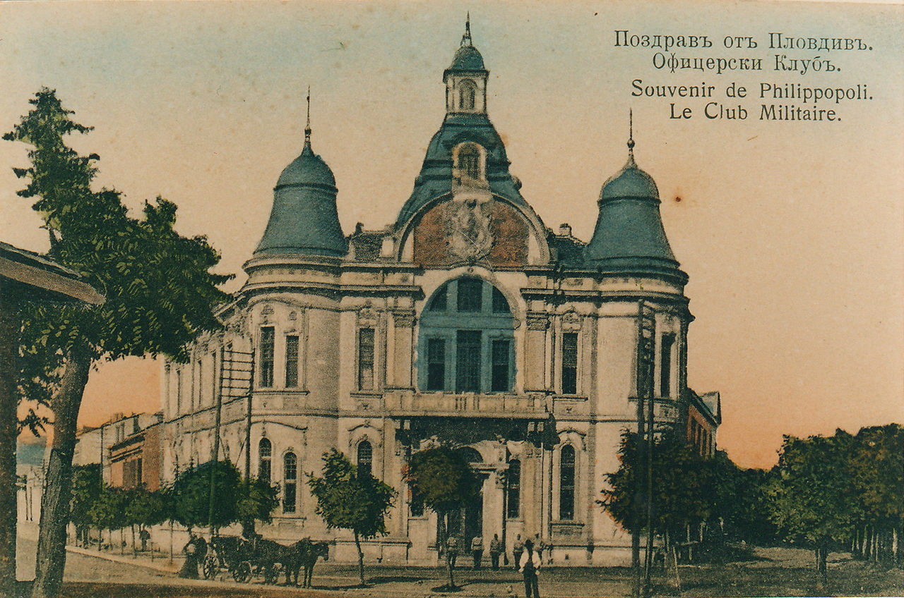

Стенопис сграфито. Автори - Ангел Чираков и Иво ……. Изпълнена по задание на Международен Панаир Пловдив АД. Година на изпълнение 2024. Първоизточник за идеята на стенописа е фотография от пощенска картичка. Снимката на Военен клуб е направена в началото на 20 ти век, преди пожара от 18 Януари 1927 година.
